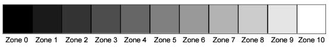
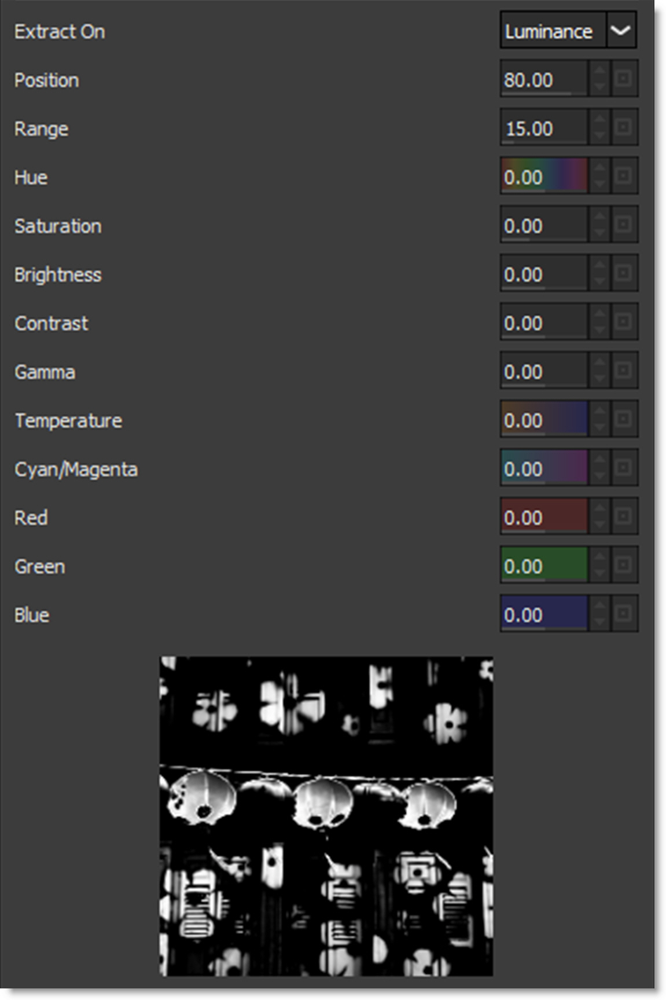

Ozone
Description
Ozone allows you to manipulate the color of an image with incredible flexibility and accuracy.
Inspired by Ansel Adams’ Zone System for still photography, we have created “The Digital Zone System”. Just what is the Digital Zone System? The world around us contains an infinite palette of colors, tones and brightness. To reproduce this vast range of brightness, the Digital Zone System takes the spectrum of image values and divides them into 11 discrete zones using proprietary image slicing algorithms.
Zones can be created using luminance, hue, saturation, average, red, green, blue, cyan, magenta, and yellow values. Look at how the image below is divided into hue zones.
With Ozone, the color values of each zone can be independently adjusted until you’ve painted a new picture. Your adjustments occur on a zone by zone basis, but you view the result of all color corrections simultaneously.
Category
Color.
Controls
Zone
Selects one of the 11 zones. Once you click in the Zone selector, you can use the left and right arrow keys to cycle through the zones.
Extract On
The Extract On pop-up menu allows you to specify the image values to be used for dividing the image into the 11 individual zones.
Luminance
Zones are created using the image’s luminance values.
Hue
Zones are created using the image’s hue. When adjusting the Position parameter, you are selecting different hues.
Saturation
Zones are created using the image’s saturation values.
Average
Zones are created based on the average of the image’s RGB values.
Red
Zones are created using the image’s red values.
Green
Zones are created using the image’s green values.
Blue
Zones are created using the image’s blue values.
Cyan
Zones are created using the image’s cyan values.
Magenta
Zones are created using the image’s magenta values.
Yellow
Zones are created using the image’s yellow values.
Zone Controls
When using Luminance as the method for slicing up the image, the Position and Range sliders are preset so that each zone is twice as bright as the previous zone, proceeding from black towards white.
Pure black is defined as Zone 0, Zone 5 as middle gray and pure white as Zone 10. By using the View menu, you can look at the zone which is helpful in determining the portions of the image you are going to adjust. The values shown as white in the selected zone are the areas of the image that will be modified by the color adjustments. Alternatively, at the bottom of the Parameter window is a small image thumbnail of the selected zone.
Position
The Position value pinpoints the color values to be used in the selected zone. This value has been preset according to the Digital Zone System, but can be changed if you choose. If the zones are created using Luminance, a high Position value shows the brightest image values as white values in the zone. A low Position value shows the darkest image values as white values in the zone.
Range
The Range value increases or decreases the range of values in the selected zone. This value has been preset according to the Digital Zone System, but can be changed if you want.
Go to the Matte section of Common Filter Controls to see how the Position and Range controls work.
Hue
Rotates the hue of the zone.
Saturation
Adjusts the saturation of the zone. Positive values saturate, negative values desaturate.
Brightness
Adjusts the brightness of the zone. Positive values brighten, negative values darken.
Contrast
Adjusts the contrast of the zone. Positive values increase contrast, negative values decrease contrast.
Gamma
Adjusts the gamma of the zone. The gamma adjustment leaves the white and black points the same and only modifies the values in-between. Positive values lighten the midtones, negative values darken the midtones.
Red
Adds or subtracts red from the zone.
Green
Adds or subtracts green from the zone.
Blue
Adds or subtracts blue from the zone.
Temperature
Sets the color temperature of the zone. Dragging the slider to the right makes the image cooler (bluer) and dragging the slider to the left makes the image warmer (redder).
Cyan/Magenta
Adds either Cyan or Magenta to the zone. Dragging the slider to the right makes the image more magenta and dragging the slider to the left makes the image more cyan.
Zone Thumbnail
At the bottom of the Parameter window is a thumbnail of the selected zone to help you see which areas of the image will be adjusted.